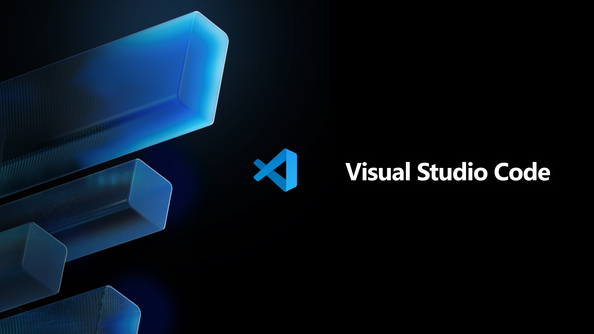
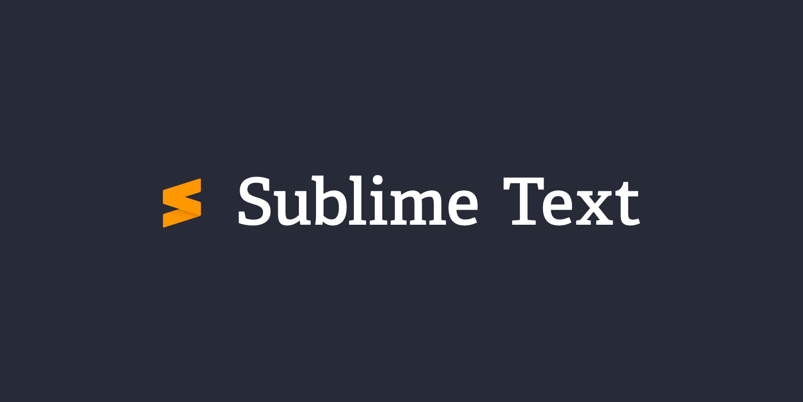
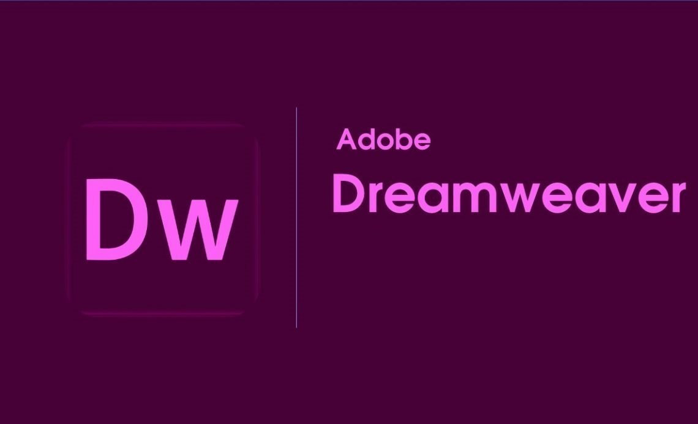
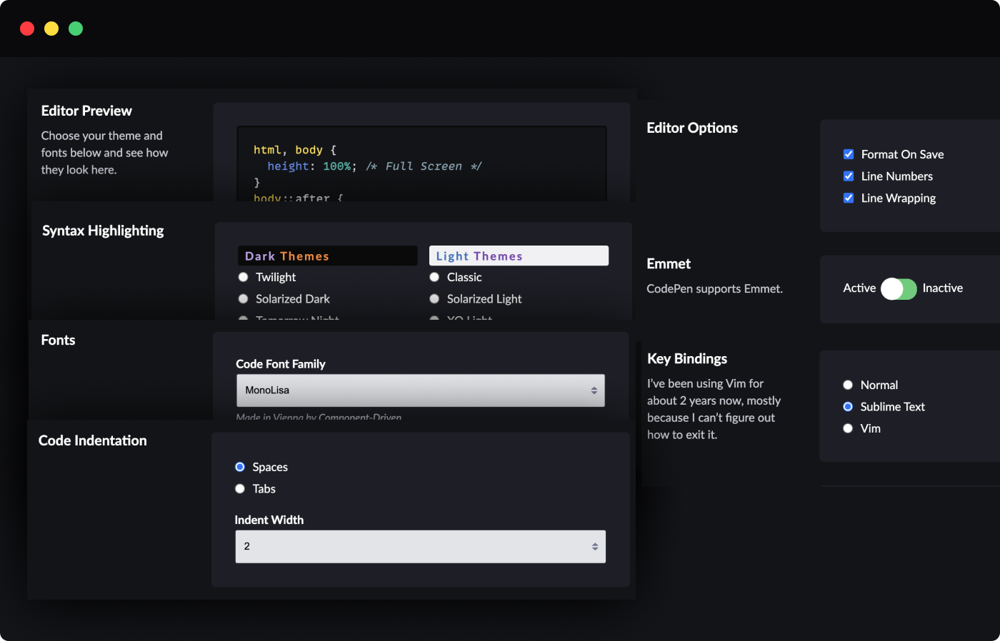

1. Visual Studio Code
Visual Studio Code (VS Code) - це безкоштовний редактор коду
від
Microsoft, який став одним з найпопулярніших інструментів для розробки
веб-сайтів.
Він підтримує безліч розширень, що дозволяють додавати
функціональність, таку як автодоповнення коду, інтеграція з системами
контролю версій та багато іншого.
Переваги:
- Безкоштовний і відкритий код
- Велика кількість розширень
- Інтеграція з Git
- Підтримка багатьох мов програмування
Недоліки:
- Може бути важким для початківців через велику кількість функцій
- Потребує налаштування під себе
Офіційний сайт: https://code.visualstudio.com/
2. Sublime Text
Sublime Text - це легкий і швидкий текстовий редактор, який підтримує багато мов програмування. Він має інтуїтивний інтерфейс і безліч плагінів для розширення функціональності.
Переваги:
- Швидкий і легкий
- Інтуїтивний інтерфейс
- Підтримка плагінів
Недоліки:
- Платний (хоча є безкоштовна версія з нагадуваннями про покупку)
- Менше розширень у порівнянні з VS Code
Офіційний сайт: https://www.sublimetext.com/
3.Adobe Dreamweaver
Adobe Dreamweaver - це потужний інструмент для веб-розробки від Adobe. Він підтримує як візуальне редагування, так і роботу з кодом, що робить його популярним серед дизайнерів і розробників.
Переваги:
- Підтримка візуального редагування
- Інтеграція з іншими продуктами Adobe
- Підтримка багатьох мов програмування
Недоліки:
- Платний (підписка на Adobe Creative Cloud)
- Може бути важким для початківців
Офіційний сайт: https://www.adobe.com/products/dreamweaver.html
4.CodePen
CodePen - це онлайн-редактор коду, який дозволяє розробникам створювати та обмінюватися фрагментами HTML, CSS та JavaScript. Це чудовий інструмент для швидкого прототипування та тестування ідей.
Переваги:
- Безкоштовний і доступний онлайн
- Спільнота розробників для обміну ідеями
- Швидке прототипування
Недоліки:
- Обмежена функціональність у безкоштовній версії
- Потребує підключення до Інтернету
Офіційний сайт: https://codepen.io/
5.WebStorm
WebStorm - це потужне IDE для JavaScript і веб-розробки від JetBrains. Він пропонує розширені функції, такі як рефакторинг коду, інтеграція з системами контролю версій і підтримка багатьох фреймворків.
Переваги:
- Потужні функції для розробки
- Інтеграція з системами контролю версій
- Підтримка багатьох фреймворків
Недоліки:
- Платний (хоча є безкоштовна версія для студентів і відкритих проектів)
- Може бути важким для початківців